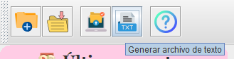

Generar Archivo de Texto
Con esta funcionalidad puedes generar un archivo de texto con las recetas que has creado.
Pasos:
- Haz clic en el botón Guardar para guardar las recetas que has creado.
- Luego, haz clic en el botón Generar archivo de texto.
- El archivo .txt se descargará automáticamente.
